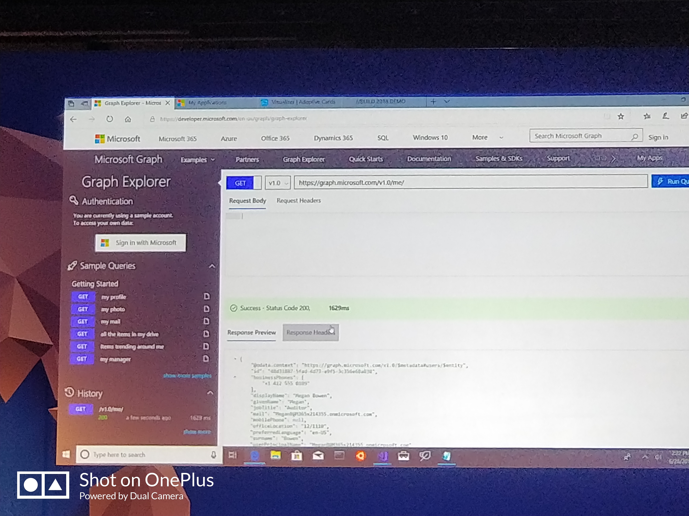
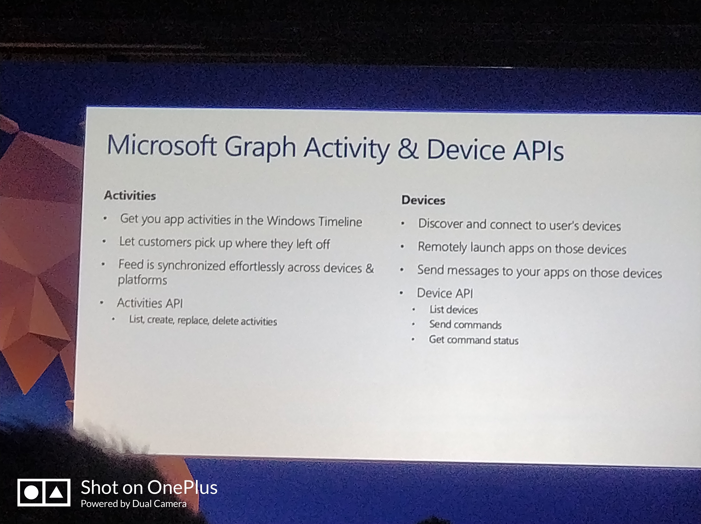

前言
前一阵子收到了微软发给所有的insider的邀请邮件，大意说是DevTour即将巡回到北京，欢迎参加云云。弱鸡表示从来没听过这个名字，吓得我赶紧百度了一下：
每年，我们都将最新的技术带给全球的开发者。今年，我们通过与Windows、Windows Insider项目以及我们的开发者和内部人士的合作伙伴关系，将活动扩展到更多的城市。我们将介绍人工智能，最新的桌面开发，微软365，进步网络应用，开发者办公室，混合现实，Microsoft Graph，等等。此次巡回活动是开发者与来自微软总部雷德蒙德的领导和工程师以及地区行业领先和微软开发者MVPs和RDs相互直接交流的一次绝佳机会。
概括一下大概就是5个字：大佬见面会
然而不幸的是这一天恰好是我考高数的日子，以前处在偏远山区的我看见这类活动只能望汤兴叹，好容易在北京，怎么能就这样鸽了呢？于是乎赶紧发邮件问了一下能否下午到场，所幸得到了肯定的答复。
到达
不得不吐槽沙河校区的偏远程度超乎想象，上午高数凉了（迫真）以后即使我以最快速度向会场赶，最终在会议开始前最后一刻才成功赶到。
走进酒店，首先看见的就是指引牌。和我想象的不一样，微软并没有大张旗鼓地打印海报，仅仅是在门口放了个一人高的牌子，这与其选择如此昂贵酒店的土豪作风反而显得格格不入。
快速完成了签到后领到了参会牌和会议集章册，后者印着会议日程，虽然是早已公布在网站上的：
- 签到
- 开始签到
- 主题演讲
- 茶歇时间
- 如何在Windows 10上，进化您现有的应用程序
- 如何充分利用PWA开发Web App
- 午餐
- 基于 Azure Kubernetes Services 的DevOps 全生命周期流水线
- 如何使用Office 365创建高效应用程序
- 如何使用Microsoft Graph在所有设备上提升用户参与度
- 茶歇时间
- 边缘计算中的智能化 - 机器学习入门
- 构建Windows混合现实应用程序
- If(dev) { Insider(); }
- 互动问答

进入会场的时候，里面似乎正在进行类似一站到底的游戏，当然题目都是编程方面的，从Visual Basic到C#无所不包，（据说Basic的题目淘汰了许多年轻人）。其题目更多的是考察诸如位运算这种深层次的理解。下面是只剩两人的时候的巅峰对决，你能说出答案么？
当然也不乏这种让人跑路的逗逼题目:Which command can exit vim?
Head:”:wq” Tails:”rm -rf /“
上半场
最终夺冠的是右边的小哥，在他选择完奖品之后，讲座终于正式开始
DevOps
这一节主要讲的是k8s和DevOps对于产品开发流程的构建。 首先主讲人Lei Xu给我们回顾了一下软件开发的架构变化:
现如今，软件的生命周期更多地向组件化，容器化发展，开发者开始更多的着眼于软件的开发，而不再去担心服务器环境的配置。Iaas的出现让开发者不用再去关心服务器的供电、网络等问题，云主机的出现则免去了操作系统和相关业务软件的配置和维护。而Docker则将软件的运行环境和系统环境实现了分离，开发环境和生产环境的差异不再是个问题。然而，即使采用了docker，容器依旧需要命令行进行管理、维护，与此同时至于k8s，先看看官方（百度）定义：
Kubernetes（k8s）是自动化容器操作的开源平台，这些操作包括部署，调度和节点集群间扩展。如果你曾经用过Docker容器技术部署容器，那么可以将Docker看成Kubernetes内部使用的低级别组件。
k8s可以理解为一种类似腾讯云的管理平台。只不过腾讯云你开的是云主机，k8s开的是一个个容器，在这个平台上，你完全不用担心宿主机的运行状况，你的眼中有的只有一个个容器，一个个微服务。但是k8s的配置是极其复杂的，Xu在场上做了一个调查，与会的诸位中配置过k8s的只有一个人。应对这个问题，Azure提供了一个一键式平台解决方案，国内提供类似服务的好像还有阿里云。
至于DevOps，软工的诸位一定不会陌生，这是一种软件开发生命周期的解决方案。
不过别看他说的神乎其神，微软的提供的主要是以VSTS和Azure为中心展开的业务，后者没用过不了解，但前者其实诟病甚多。主要是操作逻辑感人，喜欢把简单问题复杂化，我找个删除找了半个小时。此外Work Item的分配竟然要一个非常睿智的Query来查看，而且和宇宙第一IDE的结合也不甚完美，当然也可能是我不会用吧。毕竟人家有个岗位可是叫做DevOps工程师呢。
值得一提的是，可能是Azure在Edge上翻车翻多彻底绝望了吧，现场演示的计算机换成了一台运行着Chrome的Mac，有图为证（有点糊了）：
最后的最后，在玩滥的One more thing..之后，他介绍了一个叫做DevOps魔盒的东东，反正就是个一条龙服务，感兴趣的可以关注一下。
Teams app开发
关于这方面，由于我并不是Office 365的订阅者(2020年6月22日Update：现在是了)，因此我并不是很清楚。大意就是Office又填了一个新成员叫做Teams，应该是用于团队协作用的。这个Teams可以添加各种各种各样的web apps用于团队合作。然后这些app可以调用各种各样的数据，如下：
- Audio and video conferencing
- Permanent chat
- Online meetings and broadcasts
- Shared files in SharePoint
- Team notes in OneNote
- Team tasks in Planner
- Shared email inbox, calendar and email address
- Available for web, desktop and mobile
这些app主要分为两类:Tabs和Bots，前者是作为一个选项卡嵌入Teams，有点类似组件，后者顾名思义是机器人。项目基于万能的html和Typescript开发，支持Visual Studio远程调试
不过我并没有在国内看到什么人使用，也没听说哪个公司大规模购置了office 365，毕竟在你国万物可是都有替代的：版本控制？那是什么？用QQ群就够了
团队协作？Sharepoint?不需要，我有QQ群
视频会议？Skype？对不起，我还是又QQ群
Teams?没听过的东西，能有QQ群好用么？
毕竟，那句话咋说的来着？
又不是不能用
Microsoft Graph
这个我觉得是今天下午的重中之重了，由Justin Liu给我们带来。虽然错过了上午的PWA有点可惜，不过听了这个便已经不虚此行了，你看我手都抖得不能自已了:
那么什么是MS Graph呢？Graph是微软提供的一组用于获取基于微软各项服务中产生的各种数据的api（挺绕口的），通俗地说就是你在使用微软各项服务的时侯他收集了你的隐私，然后提供了一些接口让你能够利用这个数据。我们评判一个数据提供方最主要的指标就是数据数量以及质量，那么，这个数据量究竟有多大呢，微软给了张图:
可以看到这个数据量是非常可观的，来源也非常广泛，例如Office365、Outlook、Onedrive，甚至Windows 10的Timeline。可以说，只要你使用过微软相关的云服务，你就都会有记录下来。那么究竟有那些数据呢？
API主要分为两类，User和Activity。前者包含的主要是用户的基本信息以及人脉信息，可以获取例如我的工作伙伴，我的照片，我的邮箱等个人信息，API以/me打头，后接简单的单词，通过GET或者POST发送请求，(2020年6月22日Update：就是Restful API)然后服务器返回JSON，如图所示：

相信看到这里，有些小伙伴心里面已经有一些应用场景了，如果没有的话请再看下面这张图：
是不是觉得挺眼熟？没错，前端中常见的组件化数据绑定和模板渲染！这简直是为Vue.js这种数据绑定的框架量身定制的，有这些API做个个人dashboard或者智能助理完全不是问题。
值得注意的是，这里官方给的Demo是追踪日历变化，在会议时长占比超过80%的时候自动提示，其关于人脉方面的API数据来源则是Office Teams，因此对于没有使用Office 365的小伙伴来说，这部分功能算是废了。不过尽管如此，剩下的API也依旧让人兴奋。
Microsoft Graph除了获取数据的API外，还提供了一些动作性API用于执行发送邮件等主动操作，主要通过POST访问，例如下面这个自动文档审批工作流：
前面我提到了组件化和数据绑定，微软也提出了一种新型控件（暂时姑且这么叫）Adaptive Card
这是一种可适应性的卡片数据交换方式，或者应该叫可适应模板。之所以被称为可适应，是因为它采用json方式传入数据，而根据应用场景的不同可以渲染成不同的样子，例如小娜消息，Skype消息，Windows Timeline等等，亦即“一份数据，万种表现”。
前面提到了Graph的API还有Activity这一大类，其全名是Activity & Device，从名字上我们可以看出，这一类主要是偏向用户对设备的使用，而不是依赖于某个软件

通过这组API我们可获取到Windows上的应用使用情况，推送Timeline消息，向特定设备推送消息等。随后，Justin展示了如何在Windows10 1803上自定义显示TImeline消息，支持对标题、显示信息甚至背景实施自定义。
幕间
讲座到此暂歇，我也出去逛了逛喝口水，看了看一辈子也买不起的Hololens（本来是想体验的。。人太多了ORZ）
在此我要大喊：微软牌蛋糕真好吃！
下半场
下午3点半，讲座继续。
WindowsML
主讲继续是Nikola Metulev大佬，他一手打造了UWP community tookit的，他的英语是唯一一个不用传译器能听懂的，其他印度英语惹不起。
说实话，我一看是看见WindowsML的时候是把它看成了MR，后来又当作标记语言，直到今天我才知道这是Machine Learning的意思。
说到机器学习，常规方法是通过服务器（炼丹炉）对成千上万的样本进行训练，然后得到模型进行评估，而且这种训练多半是发生在Linux上的，似乎与Windows无缘。但是，在海量样本的收集过程中，免不了会收集大量的隐私，而这对于多数用户来说是不可忽视的。因此AI在边缘计算中的重要性也在不断提高，而作为桌面上最流行的操作系统，WindowsML的存在就显得尤为必要。随后，他在Surface book 2上演示了实时的摄像头画面处理：
这除了说明Surface Book 2性能很强（广告嫌疑）外，也说明了WindowsML具有不错的性能。然而，如果就仅仅如此的话，WindwosML也并没有什么太过出彩的地方，也难以吸引别人放弃流行的Linux平台转投Windows。
人们谈起机器学习，除了其烧钱的硬件外，混合高等数学、概率论、线性代数的理论知识其实更加令人头痛，大名鼎鼎的西瓜书更是手边不能离开数学教材。如此种种都说明了一个事实，大部分程序员没有独自设计神经网络的理论知识和能力。
而这也就是WindowsML震撼的地方,Nikola给我们当场演示了一个关于面部表情识别的demo，他向Visual Studio中拖拽了一个ONNX格式的网络模型文件，VS自动生成了相应的Input和Output函数，神经网络的使用被简化成了黑箱！输入数据，吐出数据，仅此而已。程序员可以无需关心网络实现，直接调用，而且并不局限于Python等少数语言。
那么，如何去获得ONNX文件呢？这张图给出了几种可能的方法:
前两种方法姑且不提，下载现成的文件和从其他模型文件转换大家都不难想到。后两种则是直接提供了一种不用写代码就能构建神经网络的方法！
在他的现场演示中，用户只需要直接选择模型类别（分类器/目标识别），然后按标签上传图片就可以了，Azure甚至会自动在云端帮你进行训练（速度还不慢）。训练完成后得到的ONNX文件则可以直接使用！从炼丹炉到炼丹术，Azure都帮你做完了，用户只要等着就好了。
Windows 混合现实
没钱，买不起，没听，下一个
If(dev) { Insider(); }
这个环节其实更多的是在介绍Insider项目的意义，主讲是Tyler Ahn大妈。她主要举了几个依靠insider成功的例子，得出了{Insider(sth);}≠{Insider=true;}这一结论。Insider计划是让million的人代表billion的人，同时给开发者一个机会，一个平台去实现他们的goal。个人感觉没啥干货，就口号喊得好听:
Make your good code into great business.
F&Q
作为最后一个环节，提问，大家参与度还是非常踊跃地，看看这排队的人：
其实部分问题还是挺尖锐的，包括消费者买得起的Hololens何时推出？有没有开源Groove音乐等Windows内置APP的可能来给开发者提供参考？Fluent Design能用在Web和Mobile上么？关于最后一个问题，Justin让希望在Web上看见Fluent Design的举手，其结果自然是全场齐举，莫名壮观。Material Design可能要有对手了。
总结
第一次参加DevTour这类活动，挺新奇的的。不过感觉收获挺大，了解到了很多很多的黑科技。同时“原来有这种东西，我之前做的XXX到底有什么意义！”这种感觉也让人爱恨交织。最后的最后，如果要用两个字来形容这次活动的话，好吃！
では、諸君は。